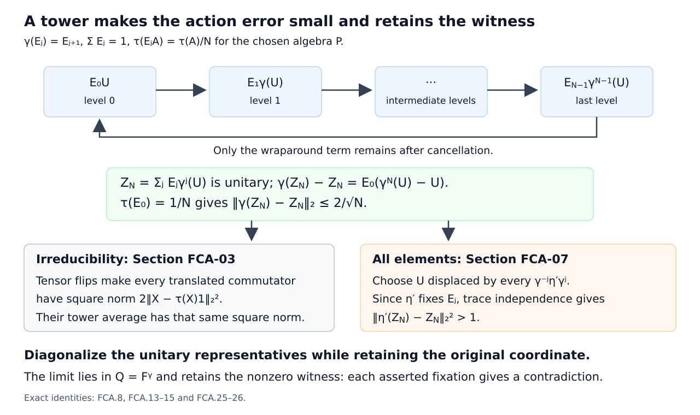

Fixed central sequences determine an automorphism
Let R be the hyperfinite II1 factor with separable predual and normalized trace τ. Suppose every nonzero power of an automorphism α is outer. The central sequences fixed by α determine its cyclic subgroup modulo inner automorphisms: if β fixes each of these central sequences, then β differs from one integer power of α by an inner automorphism. We prove the statement without assuming that α and β commute.
The tracial quotient and a fixed-coordinate diagonal
Fix a free ultrafilter ω on the positive integers. Write
\[ F=R_\omega=R'\cap R^\omega,\qquad \gamma=\alpha_\omega,\qquad Q=F^\gamma. \tag{FCA.1} \]The finite quotient, its faithful normal trace, and exact lifts of projection partitions and unitaries are supplied by Central sequence algebras and exact lifts. In this tracial setting a bounded sequence represents an element of F precisely when its commutator with each fixed element of R tends to zero in 2-norm along ω. Quotient 2-norm is the ultralimit of coordinate 2-norms. Automorphisms of R preserve τ and act normally on F.
We use the dyadic tensor model
\[ R=\overline{\bigotimes_{j\geq1}(M_2,\operatorname{tr}_2)}^{\,\mathrm{vN}}, \qquad D_m=\bigotimes_{j=1}^mM_2, \qquad C_m=D_m'\cap R. \tag{FCA.2} \]The model and bounded finite-head approximation are proved in Hyperfinite finite factors. Conditional expectations used below are the trace-preserving finite-matrix expectations: they average conjugation by a finite matrix head and take the trace on its complementary tensor factors.
Centrally trivial automorphisms and decreasing AFD factors, Theorem 4.2 proves that a centrally trivial automorphism of R is inner. Applying it to every nonzero power of α shows that the asymptotic period of α is zero. Hence the relative tower theorem in Central towers and unitary cocycles, Theorem 3.1 applies. The same lesson's Lemma 2.1 says that any nonidentity automorphism of F induced by an automorphism of R is properly outer. These hypotheses will be retained at both uses of those results.
Here is the diagonal selection used throughout. Choose a sequence (\(a_l\)) dense in the operator unit ball of R for the 2-norm. Suppose row r consists of unitary representatives \(u_{r,k}\) of a unitary in F, and the required finite tests for that row hold on a set \(B_r\) in ω. Include
\[ \|[u_{r,k},a_l]\|_2<1/r\quad(l\leq r). \]Put
\[ A_r=\{k\geq r\}\cap\bigcap_{j=1}^rB_j, \qquad d(k)=\max\{r\leq k:k\in A_r\}. \tag{FCA.3} \]For k outside \(A_1\) set d(k)=0 and \(v_k\)=1; otherwise set \(v_k\)=\(u_{d(k),k}\). The maximum is finite, and d(k) tends to infinity along ω because d(k)≥r on \(A_r\). Thus V=[(\(v_k\))] is a unitary in F. Indeed, the dense tests extend to each fixed a by
\[ \|[v_k,a]\|_2\leq\|[v_k,a_l]\|_2+2\|a-a_l\|_2. \]Every additional row test whose threshold tends to zero survives this diagonal. Tests involving a prescribed representative \(x_k\) or a coordinate automorphism always use the original coordinate k. We will not replace \(x_k\) by \(x_{d(k)}\).
Tensor flips detect every nonscalar element
Finite-family flip lemma. For \(X_1\),...,\(X_s\) in F there is a self-adjoint unitary Y in F such that
\[ \|[X_j,Y]\|_2^2 =2\bigl(\|X_j\|_2^2-|\tau_\omega(X_j)|^2\bigr) \qquad(1\leq j\leq s). \tag{FCA.4} \]Proof. Choose bounded central representatives \(x_{j,k}\). For each fixed m,
\[ \|x_{j,k}-E_{C_m}(x_{j,k})\|_2\longrightarrow_\omega0. \tag{FCA.5} \]To check this assertion explicitly, the matrix head \(D_m\) has a finite set of clock-and-shift unitaries whose conjugation average is \(E_{C_m}\). The difference in (FCA.5) is bounded by the average of the commutator norms with these finitely many fixed unitaries. Each tends to zero by centrality.
Choose decreasing ω-large sets on which (FCA.5), for the first r heads and all s elements, has error below 1/r, and impose k≥r. The maximum construction in (FCA.3) gives m(k)→ω∞ with
\[ \|x_{j,k}-E_{C_{m(k)}}(x_{j,k})\|_2\longrightarrow_\omega0. \]For each coordinate k, bounded finite-head approximation in \(C_{m(k)}\) gives a common finite tensor block \(B_k\)≅\(M_{d_k}\) and elements \(b_{j,k}\) in \(B_k\) such that
\[ \|b_{j,k}\|\leq\|x_{j,k}\|,\qquad \|x_{j,k}-b_{j,k}\|_2\longrightarrow_\omega0. \tag{FCA.6} \]One may take the trace-preserving expectation onto a sufficiently long finite block; use error at most 1/k in addition to the preceding tail error. Take an equally long unused block \(B'_k\) after \(B_k\). The unitary
\[ y_k=\sum_{a,b=1}^{d_k}e_{ab}\otimes e_{ba} \tag{FCA.7} \]in \(B_k\otimes B'_k\) is self-adjoint, has square one, and exchanges the two factors. It belongs to \(C_{m(k)}\). Therefore (\(y_k\)) is central: for a in a fixed head \(D_m\) it commutes with a on an ω-large set, and finite-head approximation extends the assertion to every fixed a in R.
Product trace and the flip identity give
\[ \tau(b_{j,k}^*y_kb_{j,k}y_k)=|\tau(b_{j,k})|^2. \]The uniform bounds in (FCA.6), Cauchy–Schwarz, and 2-norm approximation let us replace \(b_{j,k}\) by \(x_{j,k}\) in the ultralimit. Finally,
\[ \|[X,Y]\|_2^2 =2\|X\|_2^2-2\operatorname{Re}\tau_\omega(X^*YXY) \]for a self-adjoint unitary Y. This proves (FCA.4). □
In particular F is a factor. If X lies in its center, the left side of (FCA.4) is zero, so faithfulness gives X=\(τ_ω(X)\)1. It is a II1 factor, rather than a finite matrix algebra: for every r, matrix units in a block of r tensor positions moving to infinity represent a unital \(M_{2^r}\) in F. A finite matrix algebra cannot admit unital matrix systems of all these sizes. The finite-factor classification and projection comparison therefore apply to F, without any assumption that its predual is separable.
Trace-independent towers and irreducibility
Tower lemma. Given N≥1 and a von Neumann subalgebra P of F with separable predual, there is a projection partition \(E_0\),...,\(E_{N-1}\) in P'∩F such that
\[ \gamma(E_j)=E_{j+1},\qquad \tau_\omega(E_jA)=\frac1N\tau_\omega(A)\quad(A\in P). \tag{FCA.8} \]Indices are taken modulo N. The algebra P need not be γ-invariant.
Proof. Start with an exact cyclic N-tower in F, provided by the tower theorem cited in Section 01, and lift it to exact coordinate projection partitions \(e_{j,l}\). The coordinate α-covariance defects tend to zero along ω. Also
\[ e_{j,l}\longrightarrow_\omega N^{-1}1 \quad\text{ultraweakly in R}. \tag{FCA.9} \]Indeed the ultraweak ultralimit exists in the compact operator unit ball, centrality makes it scalar, and its trace is 1/N by cyclic covariance in the quotient.
Take a countable 2-norm dense sequence \(A_s\) in the unit ball of P, with bounded representatives \(a_{s,k}\). At coordinate k choose l(k) such that the first k centrality tests in R, all commutators with \(a_{s,k}\) for s≤k, and the α-covariance defects are below 1/k. Require in addition
\[ \left|\tau(e_{j,l(k)}a_{s,k})-\frac1N\tau(a_{s,k})\right|<1/k \quad(s\leq k,\ 0\leq j<N). \tag{FCA.10} \]All these finitely many conditions hold on ω-large sets in the variable l. For (FCA.10), use (FCA.9) against the fixed coordinate element \(a_{s,k}\). Their intersection is nonempty. The classes of \(e_{j,l(k)}\) give (FCA.8) on the dense sequence. Bounded multiplication and the Cauchy–Schwarz inequality extend both commutation and the trace identities to P. □
Fixed-algebra irreducibility.
\[ Q'\cap F=\mathbb C1. \tag{FCA.11} \]Proof. Suppose X in \(Q'\cap F\) has \(τ_ω(X)\)=0. For each N apply the flip lemma to X,\(γ^{-1}(X)\),...,\(γ^{-(N-1)}(X)\), obtaining a self-adjoint unitary \(Y_N\) with
\[ \|[X,\gamma^j(Y_N)]\|_2^2=2\|X\|_2^2 \quad(0\leq j<N). \tag{FCA.12} \]Apply the tower lemma to the algebra generated by X and \(Y_N\),γ(\(Y_N\)),...,\(γ^N(Y_N)\). A finitely generated von Neumann algebra with a faithful normal tracial state has separable predual: the rational star polynomials are dense in its trace GNS space. Define
\[ Z_N=\sum_{j=0}^{N-1}E_j\gamma^j(Y_N). \tag{FCA.13} \]Commutation and orthogonality make \(Z_N\) a unitary. Applying γ cancels every term except the wraparound term:
\[ \gamma(Z_N)-Z_N=E_0\bigl(\gamma^N(Y_N)-Y_N\bigr), \qquad\|\gamma(Z_N)-Z_N\|_2\leq\frac2{\sqrt N}. \tag{FCA.14} \]The tower also commutes with the two operators in the last difference, so the bound follows from \(τ_ω(E_0)\)=1/N. Orthogonality eliminates the cross terms in the commutator square. The trace independence in (FCA.8) and (FCA.12) give
\[ \|[X,Z_N]\|_2^2 =\frac1N\sum_{j=0}^{N-1}\|[X,\gamma^j(Y_N)]\|_2^2 =2\|X\|_2^2. \tag{FCA.15} \]Lift the \(Z_N\) to unitary rows. Use Section 01's diagonal with covariance threshold 2/√N+1/N, and require that the coordinate squared commutator norm with the original representative \(x_k\) differ from 2\(\|X\|_2^2\) by less than 1/N. These conditions hold on ω-large sets by (FCA.14)–(FCA.15). The resulting unitary Z lies in Q and satisfies \(\|[X,Z]\|_2^2\)=2\(\|X\|_2^2\). But X commutes with Q, so X=0. Subtracting the trace from an arbitrary element of \(Q'\cap F\) proves (FCA.11). □
Corner eigenvectors and scalar phases
Every z in the unit circle occurs as a unitary eigenvalue in every nonzero invariant corner eFe. To see this, choose N-th roots of unity \(z_N\) with |\(z_N\)-z|≤π/N. Apply the tower lemma with \(P=W^*(e)\), and put
\[ W_N=\sum_{j=0}^{N-1}z_N^{-j}E_j. \tag{FCA.16} \]This is a unitary commuting with e, and γ(\(W_N\))=\(z_NW_N\). The wraparound equality uses \(z_N^N\)=1. Fix projection representatives \(p_k\) of e. Diagonalize unitary representatives of \(W_N\) while retaining the tests
\[ \|\alpha(w_{N,k})-z_Nw_{N,k}\|_2<1/N, \qquad \|[w_{N,k},p_k]\|_2<1/N. \]Section 01 supplies a unitary U commuting with e and satisfying γ(U)=zU. Thus eU is a unitary in eFe with eigenvalue z.
This also proves Γ(γ)=T. In fact, if f in ℓ1(Z) annihilates the action on eFe, then applying its absolutely convergent action sum to eU gives
\[ 0=\sum_{m\in\mathbb Z}f(m)\gamma^m(eU) =\left(\sum_{m\in\mathbb Z}f(m)z^m\right)eU. \]Since eU≠0, every annihilator has Fourier transform zero at z. The annihilator definition of the Arveson spectrum therefore puts every z in the spectrum on eFe. The Connes spectrum is the intersection of these spectra over the nonzero invariant projections e, so it is T.
Now suppose η=\(β_ω\) fixes Q pointwise. If γ(U)=zU and q in Q, then \(UqU^*\) is also in Q. Consequently
\[ \eta(U)q\eta(U)^*=UqU^*,\qquad (U^*\eta(U))q=q(U^*\eta(U)). \tag{FCA.17} \]By (FCA.11), there is a scalar λ(z) in T with η(U)=λ(z)U. It is independent of the chosen unitary eigenvector: if V has the same eigenvalue, then \(U^*V\) lies in Q, and applying η to \(V=U(U^*V)\) gives the same scalar. Products of unitary eigenvectors show
\[ \lambda(zw)=\lambda(z)\lambda(w),\qquad\lambda(1)=1. \tag{FCA.18} \]Furthermore, if γ(A)=zA for an arbitrary A in F, then \(U^*A\) lies in Q, so η(A)=λ(z)A. No commutation assumption on α and β has been used.
The lift forces a continuous integer character
Suppose λ were discontinuous at 1. There would be ε>0 and \(z_r\)→1 such that |λ(\(z_r\))-1|≥ε. Choose unitary eigenvectors \(U_r\) with eigenvalue \(z_r\), and unitary representatives \(u_{r,k}\). Their coordinate α- and β-defects satisfy, on ω-large sets,
\[ \|\alpha(u_{r,k})-z_ru_{r,k}\|_2<1/r, \qquad \|\beta(u_{r,k})-\lambda(z_r)u_{r,k}\|_2<1/r. \tag{FCA.19} \]Use both tests in the diagonal (FCA.3). The selected unitary V satisfies
\[ \|\alpha(v_k)-v_k\|_2 \leq1/d(k)+|z_{d(k)}-1|\longrightarrow_\omega0, \]and hence V lies in Q. On the other hand,
\[ \|\beta(v_k)-v_k\|_2\geq\varepsilon-1/d(k), \]so \(\|η(V)-V\|_2\)≥ε. This contradicts pointwise fixation of Q. Thus λ is continuous at 1, and its homomorphism identity makes it continuous everywhere.
Here is the integer-character argument. Set h(t)=λ(\(e^{it}\)). Near zero choose its continuous argument a(t), with a(0)=0 and |a(t)|<π/3. Whenever s,t,s+t remain in this interval, a(s+t)-a(s)-a(t) is a multiple of 2π of absolute value less than π, hence zero. Fix a small \(t_0\)>0. Subdivision and addition give a(\(qt_0\))=q a(\(t_0\)) for rational q with \(qt_0\) in the interval; continuity extends this to a(t)=ct there. For arbitrary real t, divide by a sufficiently large integer m to obtain
\[ h(t)=h(t/m)^m=e^{ict}. \]Since h(2π)=1, c is an integer n. Therefore
\[ \lambda(z)=z^n, \qquad \eta(A)=z^nA\quad\text{whenever }\gamma(A)=zA. \tag{FCA.20} \]This conclusion still concerns exact eigenvectors. The remaining sections supply the passage to all of F.
One unitary displaced by finitely many outer actions
Simultaneous displacement lemma. Let \(θ_1\),...,\(θ_m\) be properly outer automorphisms of a II1 factor N, with normalized trace τ. Then some unitary V satisfies
\[ \|\theta_i(V)-V\|_2^2>1\qquad(1\leq i\leq m). \tag{FCA.21} \]Separability of N is unnecessary, and the automorphisms need not commute or be distinct.
Proof. Set h=1/8 and δ=1/(64m). The local projection criterion The four local tests for proper outerness gives, inside every nonzero projection p, a nonzero f≤p satisfying \(\|fθ_i(f)\|\)<h for all i. Apply the criterion successively. Earlier bounds persist under further cutting because for g≤f,
\[ g\theta_i(g)=g\bigl(f\theta_i(f)\bigr)\theta_i(g). \]Start inside a subprojection of trace at most δ, which exists because a II1 factor has no minimal projections. Thus f can also be required to have trace at most δ.
Take a maximal orthogonal family of these small projections. Its strong sum is 1, since a nonzero complementary projection would provide another member. The family is countable by faithfulness of the finite trace. Choose finitely many members whose sum has complementary trace less than δ, and adjoin the complementary projection if it is nonzero. This gives a finite partition \(p_1\),...,\(p_d\) with τ(\(p_j\))≤δ. All but possibly the last projection have the overlap bound h.
For each i put \(a^{(i)}_{jk}\)=τ(\(p_jθ_i(p_k)\)). These numbers are nonnegative, their total sum is 1, and their row and column sums are τ(\(p_j\)) and τ(\(p_k\)). Hence \(a^{(i)}_{jk}\)≤δ. Their diagonal sum satisfies
\[ D_i=\sum_j a^{(i)}_{jj}\leq h^2+\delta\leq1/32. \tag{FCA.22} \]For a good projection, \(p_j\theta_i(p_j)p_j\leq h^2p_j\) gives its contribution; the possible leftover projection contributes at most its trace.
Choose independent scalars \(ζ_j\) uniformly from {1,-1,i,-i}, and set \(V=\sum_j\zeta_jp_j\). Every choice gives a unitary. Finite averaging gives
\[ \begin{aligned} S_i&=\tau(V^*\theta_i(V)) =\sum_{j,k}\overline{\zeta_j}\zeta_k a^{(i)}_{jk},\\ \mathbb E S_i&=D_i,\\ \mathbb E|S_i-D_i|^2 &=\sum_{j\ne k}(a^{(i)}_{jk})^2\leq\delta. \end{aligned} \tag{FCA.23} \]For the middle identity, all off-diagonal phases have zero mean. In the last identity, expanding the square leaves only identical ordered pairs: first and second moments of a uniform fourth root of unity vanish. The bound uses \(a_{jk}\)≤δ and \(\sum_{j,k}a_{jk}=1\).
The proportion of choices with |\(S_i\)-\(D_i\)|≥1/4 is at most 16δ. A union bound over i is at most 16mδ=1/4. Thus one choice has |\(S_i\)|<1/4+1/32<1/2 for every i. For that choice,
\[ \|\theta_i(V)-V\|_2^2=2-2\operatorname{Re}S_i>1. \]This proves (FCA.21) using only finite scalar averaging. □
The conclusion on the entire central-sequence algebra
Theorem. Under the hypotheses of the lesson, if \(β_ω\) fixes Q pointwise, then for a unique integer n,
\[ \beta_\omega=\alpha_\omega^n. \tag{FCA.24} \]Equivalently β=Ad(u)\(α^n\) for some unitary u in R.
Proof. Let n be the integer obtained in Section 05 and define
\[ \eta'=\gamma^{-n}\eta=(\alpha^{-n}\beta)_\omega. \]It fixes Q and every exact γ-eigenvector. In particular it fixes every level of every exact finite cyclic tower for γ. Indeed the finite Fourier sums of the tower levels are unitary eigenvectors, and Fourier inversion recovers each level from those sums.
Suppose η' is not the identity. Since it is induced by an automorphism of R, Section 01's proper-outerness theorem makes η' properly outer. For each positive integer N, all the conjugates
\[ \theta_j=\gamma^{-j}\eta'\gamma^j\qquad(0\leq j<N) \]are properly outer. Apply Section 06 to obtain a unitary \(U_N\) in F with
\[ \|\eta'(\gamma^j(U_N))-\gamma^j(U_N)\|_2^2>1 \quad(0\leq j<N). \tag{FCA.25} \]Use Section 03's tower lemma for the algebra generated by \(γ^j(U_N)\), 0≤j≤N, and η'(\(γ^j(U_N)\)), 0≤j<N. With the resulting levels \(E_j\), put
\[ Z_N=\sum_{j=0}^{N-1}E_j\gamma^j(U_N). \]Again \(Z_N\) is unitary and \(\|γ(Z_N)-Z_N\|_2\)≤2/√N. Since η' fixes every tower level,
\[ \eta'(Z_N)-Z_N =\sum_{j=0}^{N-1}E_j\bigl(\eta'(\gamma^j(U_N))-\gamma^j(U_N)\bigr). \]Commutation with the chosen algebra, orthogonality, and trace independence give
\[ \|\eta'(Z_N)-Z_N\|_2^2 =\frac1N\sum_{j=0}^{N-1} \|\eta'(\gamma^j(U_N))-\gamma^j(U_N)\|_2^2>1. \tag{FCA.26} \]Lift \(Z_N\) to unitary rows. In the diagonal construction impose α-covariance error below 2/√N+1/N and displacement by the fixed coordinate automorphism \(α^{-n}\)β greater than 1-1/N. These are ω-large conditions, by the preceding inequalities. The resulting unitary Z belongs to Q and has \(\|η'(Z)-Z\|_2\)≥1, contradicting pointwise fixation of Q. Thus η'=id, which proves (FCA.24).
Uniqueness follows from the unitary eigenvectors at every z in T: if \(γ^n\)=\(γ^m\), then \(z^{n-m}\)=1 for every z, forcing n=m. Finally \(α^{-n}\)β acts trivially on F, so it is centrally trivial by the ordinary-sequence/ultrafilter equivalence in Section 01's provider. It is inner on R. If \(α^{-n}\)β=Ad(v), then β=Ad(\(α^n(v)\))\(α^n\). Conversely an inner perturbation of \(α^n\) induces \(γ^n\) and fixes Q pointwise. □

Why a density shortcut would fail
Consider the bilateral tensor model \(R=\overline{\bigotimes_{j\in\mathbb Z}(M_2,\operatorname{tr}_2)}^{\mathrm{vN}}\), with the shift α. Let \(a_j\) be the diagonal self-adjoint unitary diag(1,-1) in tensor position j, and set X=[(\(a_k\))] in F. The sequence is central, since its support eventually avoids every fixed finite tensor block. For each nonzero integer r,
\[ \tau_\omega(X^*\gamma^r(X))=0,\qquad\|X\|_2=1. \tag{FCA.27} \]Thus the vectors \(γ^j(X)\), j∈Z, are orthonormal in L2(F). They also show that every nonzero power of α is outer: an inner automorphism fixes every central sequence in the quotient, whereas \(γ^r(X)\)≠X.
If H is any L2-eigenvector of γ with eigenvalue z, the absolute values of the inner products ⟨\(γ^j(X)\),H⟩ are all equal. Bessel's inequality applied to any finite part of the orthonormal family forces this common value to be zero. Therefore X is orthogonal to every eigenvector, and the linear span of exact eigenvectors is not dense in L2(F). The tower argument in Section 07 is necessary to obtain the theorem without that false density assertion.
The roles of the hypotheses can now be separated. Hyperfiniteness supplies the tensor flips and the identification of centrally trivial automorphisms with inner ones. Aperiodicity supplies cyclic towers of arbitrary lengths. The coordinate lift of β supplies both diagonal contradiction arguments. Proper outerness supplies uniform displacement against a finite family. None of these steps requires β to commute with α.
The central-sequence and outer-conjugacy background is developed in Alain Connes, Outer conjugacy classes of automorphisms of factors, and Periodic automorphisms of the hyperfinite factor of type II1. The programme proofs used at their precise hypotheses are linked in Sections 01 and 06.